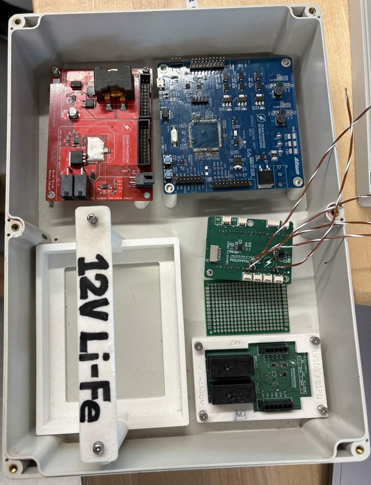
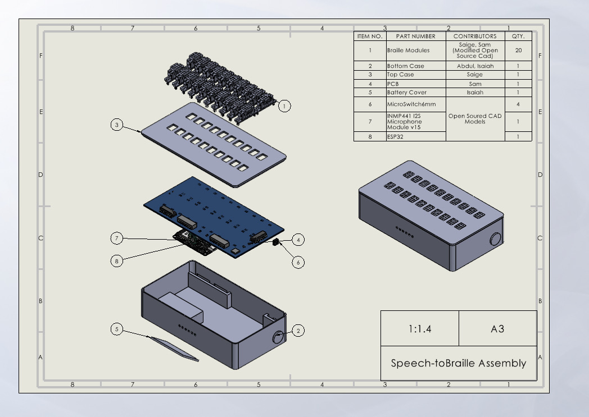

Low-voltage electronics for a 400 V race car.
Sam Patel. Hardware Engineer and Co-Lead, Grounded Low Voltage Team, SFU Formula SAE Electric. Mechatronic Systems Engineering & Business Administration, Simon Fraser University.
Co-lead of the 10+ member low-voltage team.
Co-lead a 10+ member hardware and firmware team, assigning tasks, setting deadlines, reviewing designs and test results, and managing the budget and BOM. The team is responsible for the six systems below. Select a board for details.

Carrier board consolidating 9 PCBs and 20+ vehicle signals.
- Designed a carrier board in Altium Designer that consolidates 9 PCBs and 20+ vehicle signals for a 400 V race car, with sealed Samtec connectors at the enclosure.
- Documented the full low-voltage wiring interface (150+ pins) from harness drawings and board schematics, now the team's reference for harness integration and debugging.

Bring-up and troubleshooting on two safety systems.
- Performed bring-up and troubleshooting on two safety systems, the low-voltage shutdown circuit and the brake system plausibility device, soldered the replacement board, identified five design faults through a schematic and datasheet review, and replaced the overvolted logic IC.
- Built low-voltage wire harnesses and verified continuity and signal integrity with oscilloscopes and multimeters, including pin-by-pin checks of 30-pin connectors.
Predicted cart acceleration. Measured 2 to 3 m/s².
- Designed and soldered the motor's three-phase power stage on perfboard, deriving the RLC component values from the transfer function to produce ±120° phase shifts at matched amplitude from a single function generator.
- Measured 2 to 3 m/s² cart acceleration against a 2.15 m/s² prediction after tracing low coil current (78 mA) and switching to synchronized generators with a 300 W amplifier.

YOLOX object detection on a Raspberry Pi robot arm.
- Deployed a YOLOX object detector (C++, ncnn) on a Raspberry Pi and connected it to the robot's Python arm controller through a named pipe.
- Fixed camera buffering, pipe communication, and detection-threshold bugs to run detection at full frame rate.
More work
Co-Lead, Grounded Low Voltage Team
10+ member hardware and firmware team. Manage the budget and BOM. Interviewed and hired six new members in Fall 2026.
Finance Lead
Managed approximately $20,000 in finances for the 40-member team.
Parametric rocket fuselage
SolidWorks assembly driven by a 23-variable equation file. SFU Rocketry.
Dean's Honour Roll
2026, Simon Fraser University.

Speech-to-braille converter
Schematic and PCB layout in Altium Designer for a 2×10 braille cell array driven from an STM32.